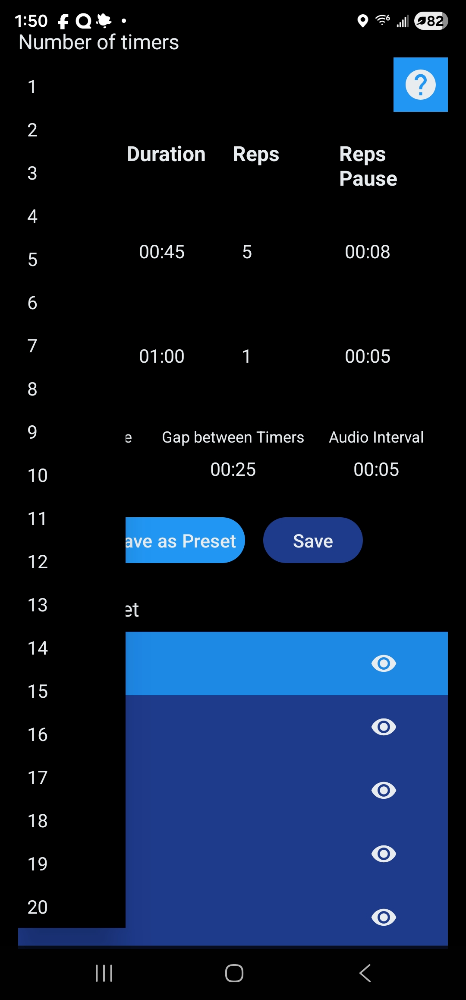
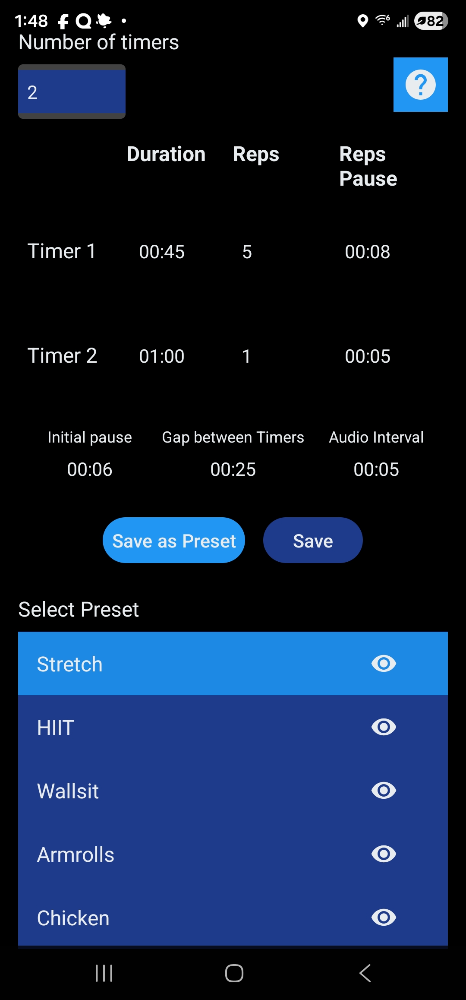
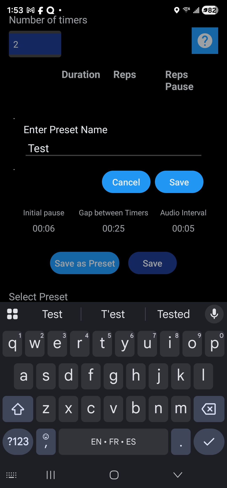
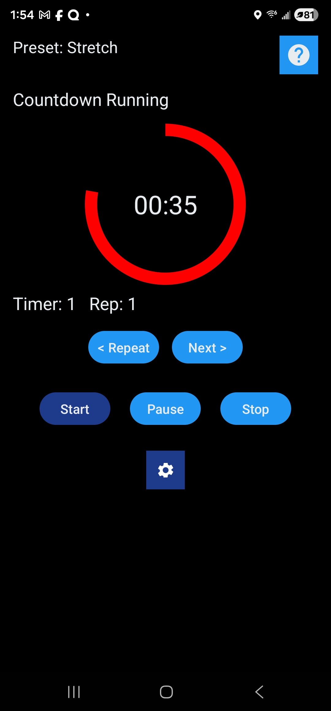
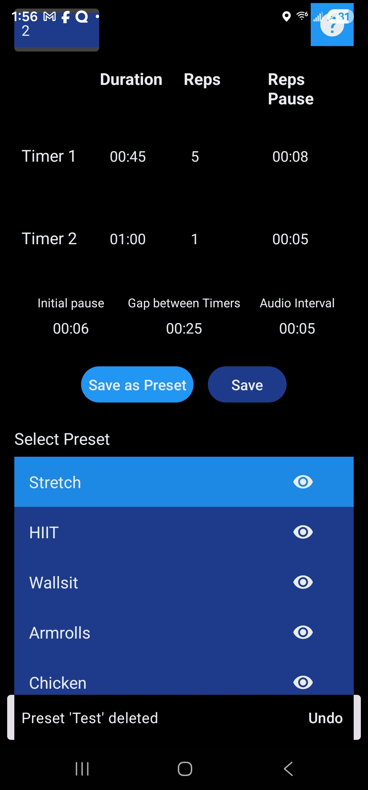

Audio Timer Tutorial
Your voice-announced interval & workout timer
1. Create Your Workout
- Tap the gear icon → Setup screen
- Choose Number of Timers (1–10)
- Set each timer’s Duration, Repeats, and optional Pause between repeats

2. Global Settings
- Initial Pause – countdown before first timer starts
- Pause Between Sequences – rest after a full cycle
- Callout Interval – voice announces remaining time every X seconds

3. Save Your Preset
- Tap “Save As Preset”
- Name it (e.g., “Tabata”, “EMOM 60”, “HIIT 30/10”)
- It instantly appears in the preset list

4. Run Your Timer
- Go back → tap the big Play button
- Voice guides you the entire time
- Use Repeat and Next buttons during workout

Pro tip: The screen stays on and audio works perfectly even when phone is locked!
5. Manage Your Presets
Tap any preset in the list on the main screen to load it instantly.

Delete a preset:
Swipe any preset left in the list → it will be deleted.
Made a mistake? A toast appears with an “UNDO” button for a few seconds — tap it to instantly restore the preset!
Swipe any preset left in the list → it will be deleted.
Made a mistake? A toast appears with an “UNDO” button for a few seconds — tap it to instantly restore the preset!
